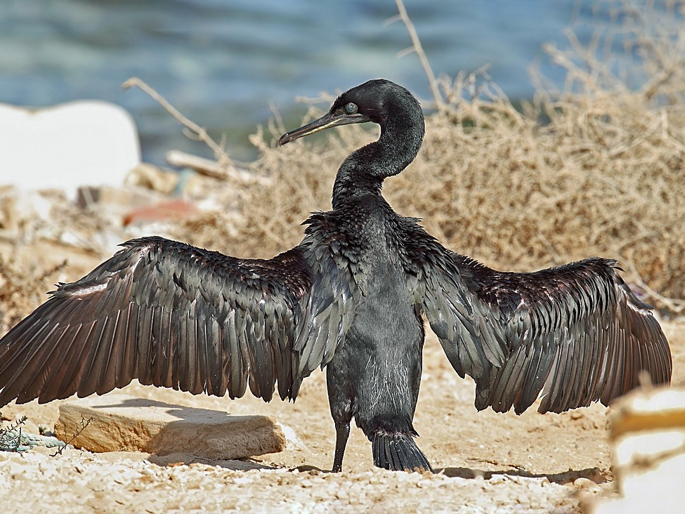

The United Arab Emirates is home to a variety of gorgeous animals,
however many of them are endangered species. The government is attempting
to maintain and even breed numerous endangered species by putting a larger
emphasis on conservation in recent years. We look at six of the most
endangered animals in the UAE and how you can help them from becoming just
another footnote in history.

Socotra Cormorant
Animals Available For Symbolic Adoption
Socotra Cormorant
Status: Vulnerable
The Socotra cormorant is an almost entirely blackish bird with a total length of about 80 centimetres. Its legs and feet are black
and its gular skin blackish. More than 40,000- 45000 breeding pairs have been recorded in the Abu Dhabi Emirate, making it the highest number.
Threats: Coastal development, disturbances and marine pollution near nesting colonies.
Fun Facts:
The Socotra cormorant dives for food, with some reports suggesting that it can stay submerged for up to three minutes at a time.
In the 1980s, scientists found a roosting flock of 250,000 of the birds.
The Socotra cormorant usually looks entirely black, but when breeding it takes on a far more purplish shade.
Dugong
Status: Vulnerable
Dugongs are cousins of manatees and share a similar plump appearance, but have a dolphin fluke-like tail.Commonly known as "sea cows," dugongs graze
peacefully on sea grasses in shallow coastal waters of the Indian and western Pacific Oceans.
Threats: sea grass habitat loss, degradation because of coastal development, industrial activities, bycatch.
Fun Facts:
Dugongs grow to a maximum length of 13 feet (4 m) long and weight of 595 pounds (270 kg).
Dugongs are referred to as sea cows because they use their strong, cleft upper lips to graze on sea grasses they uproot from the seafloor.
Dugongs can live up to 70 years.
Houbara Bustard
Status: Vulnerable
This dull brown bird can survive and thrive in arid habitats including hot deserts, meaning it is ideally suited to the UAE climate.
They're found today in North Africa, the Canary Islands and the west Sahara Desert region.
Threats: Predators, poaching, hunting and habitat decline.
Fun Facts:
The Houbara Bustard is a shy bird and rarely uses its voice.
Houbara bustard eggs are ‘camouflaged’ with shades that match desert nests to protect them from attack by predators.
Houbara Bustards spend most of their time on the ground searching for food (typically seeds, insects and small creatures.
Hawksbill Turtle
Status: Critically Endangered
Hawksbill turtles are relatively small and weigh a maximum of 50kg. They are typically brown with splashes of orange, yellow or reddish brown
while juvenile hawksbills are black or dark brown with light brown or yellow colouration on the edge of their shell and limbs. They get their
name from their distinct, beak-like mouth.
Threats: Coastal development, entanglement in abandoned fishing nets, marine debris, pollution and over-exploitation for meat, eggs and shells.
Fun Facts:
Temperature determines the sex of the offspring. Warmer temperatures produce mostly females, and cooler temperatures produce a majority of males.
Sea turtles lay circa 110 eggs in a nest, and average between 2 to 8 nests a season.
Hawksbill Turtles are the only sea turtles that lay their eggs in the UAE.
Sand Cat
Status: Vulnerable
The sand cat is the only cat species that lives mostly in desert environments. Its fur is of a pale, sandy, light brownish-yellow colour.
Threats: Residential and commercial development, biological resource use, human pressures, habitat loss and cross breeding with domestic cats.
Fun Facts:
They are bold hunters, and their prey often includes venomous snakes, rodents, birds, hares and insects.
They can survive in harsh desert environments without drinking water for weeks at a time, and obtain moisture from their prey.
They have dense hair and padding on their paws to protect against the extreme weather conditions of their habitats, and can sprint at speeds of 30-40km per hour.
Arabian Leopard
Status: Critically Endangered
There are only an estimated 200 Arabian leopards remaining in the wild. They’re the rarest and smallest of the world’s eight leopard species and are thought to be found
only in Saudi Arabia, Oman and Yemen.
Threats: Habitat conversion and intense persecution.
Fun Facts:
They are the only big cat which can carry prey into a tree.
The Leopard can be individually identified by its spot pattern on its body.
Nubian Ibex, Arabian Tahr, Mountain Gazelle, Indian Crested Porcupine, Cape Hyrax, Cape Hare, the foxes,
and various partridges may all be hunted by the Arabian leopard.
For More Information on Engangered Animals Click Here